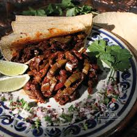

29.Tlaxcala

- Platillo: Nopales en salsa de chile pasilla
- Ingredientes: Nopales, chile pasilla, ajo, cebolla, sal, epazote.
- Historia: Los nopales han sido alimento esencial desde tiempos prehispánicos en la región.
- Dato curioso: Tlaxcala significa “lugar de tortillas”, y los nopales eran el acompañamiento básico.